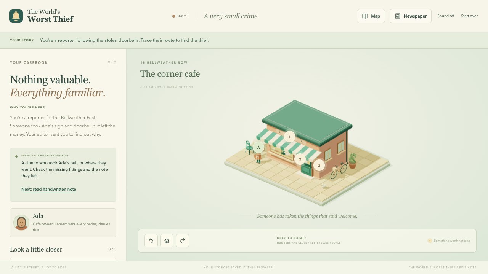

Game design & development
Bellweather Row
The World's Worst Thief · A five-act neighborhood mystery

- Role
- Game design & development
- Genre
- Narrative puzzle adventure
- Platform
- Browser · desktop & mobile
- Engine
- Three.js + TypeScript
Game Concept
An absurd newspaper story sends a reporter through Bellweather Row to investigate stolen doorbells. What begins as a mystery becomes a story about a neighborhood, a caretaker's secret, and a final gathering.
Player fantasy: become the neighborhood reporter, connect the clues, and decide how this small street's story is remembered.
Core Gameplay Loop
Investigate
Rotate the miniature world and look for something out of place.
Collect
Inspect objects, talk to residents, and record evidence in the casebook.
Deduce
Compare the clues and solve the location's puzzle.
Follow the Lead
Discover the next address and build a fuller picture of the street.
Puzzle Design & Player Feedback
Evidence Before Answers
Nine puzzles span four formats. Clue notes remain accessible inside each puzzle, keeping the player's reasoning connected to the evidence.
Flexible Investigation
Players can inspect clues freely and follow two neighborhood leads in either order. The casebook points toward unread evidence when they need direction.
Room to Be Wrong
Wrong answers carry no game-over penalty, and there is no real-time deadline. The challenge comes from connecting details, not racing a timer.
World & Narrative Design
Five original rotatable 3D locations make the street explorable at the scale of a miniature. Object inspections offer fixed close-ups, and chapter transitions explain what changed and why the next destination matters.
- 5
- 3D locations
- 24
- inspectable clues
- 9
- authored puzzles
Across five acts, conversations with five residents, four personal goodbyes, and a complete epilogue turn the investigation into a character-driven arc. The player's final headline and chosen quotation appear in the published newspaper.
Game Development
Living miniatures. Three.js and TypeScript power original 3D locations, characters, and changing reunion states. The world is rendered geometry, not a sequence of screenshots.
Campaign state. Typed story state controls progression, puzzle outcomes, and save migration. Local storage preserves clues, conversations, unread scenes, and the final article between visits.
Sound as evidence. Optional doorbell chimes are synthesized locally. Every audio pattern is also represented in text, so hearing is never required to solve a puzzle.
Playability & Testing
Keyboard rotation and a casebook alternative to 3D object selection offer multiple ways into the same investigation. Readable close-ups, native dialogs, reduced-motion support, and sound that is off by default keep the story approachable.
Automated browser tests play the campaign through publication and exercise clue selection, wrong answers, resumed scenes, older saves, mobile layouts, and reduced-motion controls.